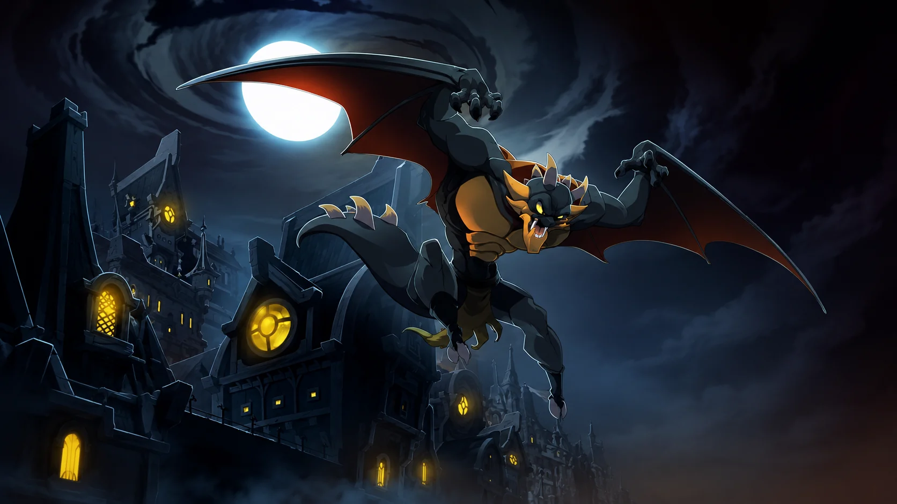

Les dragons comptent parmi les créatures les plus anciennes et les plus puissantes du Krosmoz. Leur histoire remonte aux origines mêmes de l'univers, lorsque le Grand Dragon, incarnation du Feu Noir ou Stasis, s'unit à la Grande Déesse Éliatrope.
De cette union naquirent les premiers dragons connus, dont les dragons Éliatropes, frères jumeaux des premiers Éliatropes et héritiers d'une puissance liée au Wakfu.
D'autres lignées, issues des dragons d'Osamodas, donnèrent naissance aux Dragons Noirs, aux Dragons Blancs et aux Dragons Élémentaires, à l'origine de plusieurs Dofus majeurs.
Protecteurs, créateurs, destructeurs ou gardiens de Dofus, les dragons influencent depuis les premiers âges le destin des peuples, des dieux et des mondes.
Membres de ce groupe
 Grand DragonEntité primordiale
Grand DragonEntité primordiale
 AdamaïDragon Éliatrope
AdamaïDragon Éliatrope
 GrougaloragranGardien d'Adamaï
GrougaloragranGardien d'Adamaï
 PhaérisDragon Éliatrope
PhaérisDragon Éliatrope
 GrougalorasalarDofus Ébène
GrougalorasalarDofus Ébène
 DardondakalDofus Ivoire
DardondakalDofus Ivoire
 AerafalDofus Émeraude
AerafalDofus Émeraude
 AguabrialDofus Turquoise
AguabrialDofus Turquoise
 IgnemikhalDofus Pourpre
IgnemikhalDofus Pourpre
 TerrakourialDofus Ocre
TerrakourialDofus Ocre
 RotalströmDragon du Nécromonde
RotalströmDragon du Nécromonde

RathroskDofus Argenté